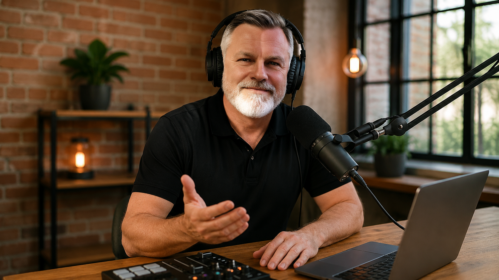

Cestovateľský magazín pre krásne destinácie, praktické itineráre,
letecké trasy a dovolenky pri mori. Názov je malá slovná hračka:
Stredomorie nie je len miesto na letnú dovolenku, ale aj svet, do
ktorého sa dá zaletieť vždy, keď človek potrebuje kúsok slnka.
Začíname krajinami Európskej únie pri Stredozemnom a Jadranskom
mori, ktoré sú zo Slovenska praktické a dostupné. Výhodou je
jednoduchšie cestovanie, EÚ roaming, známe pravidlá a pri viacerých
destináciách aj Schengen či euro. K tomu pláže, mestá, ostrovy,
história a dovolenková atmosféra.
Dolce vita
Taliansko
Mestá, pláže, ostrovy a chute pravého juhu Európy.
Grécko · KosKOS nás úplne prekvapil: Poseidón nám zobral mobil... a potom sa stalo niečo neuveriteľné
Všetky videá z Grécka
Počúvanie na cestu
Najnovšie podcasty
Najnovšie Spotify podcasty z cestovateľských podkladov projektu
Letom po Stredomorí. Všetky podcasty sú zároveň priradené ku
konkrétnym krajinám v sekcii Destinácie.

Grécko · Spotify podcast
Kos osobne
Ostrov vetra, divokých pláží a dovolenkový príbeh s Poseidónom.
Pri každom dni uvidíš hlavný plán, čo nekombinovať, dopravu,
časovú rezervu a jednoduchú alternatívu.
Tvoj tip
Kam sa pozrieme najbližšie?
Vyber región, o ktorom chceš vidieť ďalší obsah na Letom po
Stredomorí. Hlasovanie prebieha cez StrawPoll a výsledky uvidíš
po odoslaní hlasu kliknutím na Results.